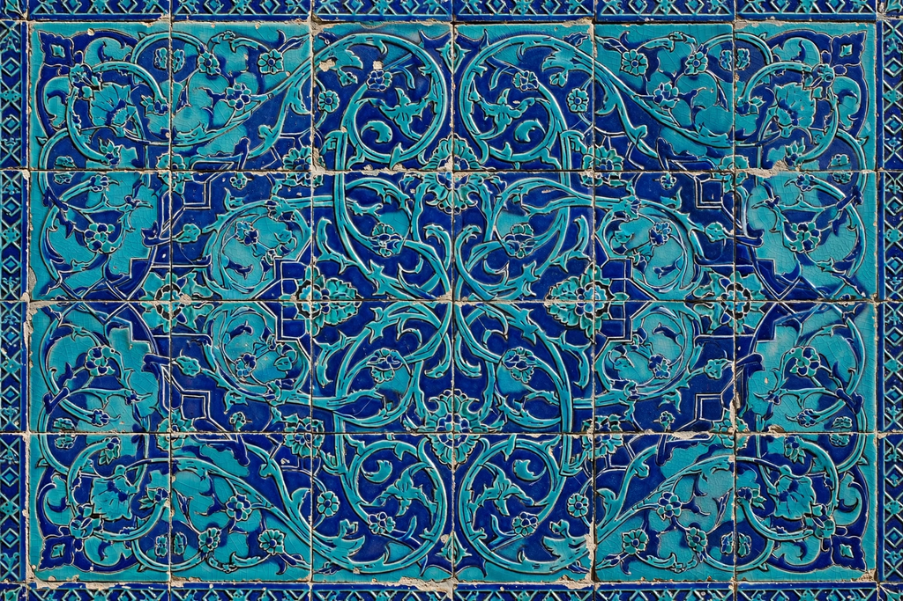

The arabesque is a form of artistic decoration consisting of surface ornament based on rhythmic linear patterns of scrolling and interlacing foliage, tendrils, and abstract curvilinear forms. It is one of the characteristic elements of Islamic art, where — alongside calligraphy and geometric patterns — it covers architecture, ceramics such as Iznik pottery, manuscripts, textiles, and metalwork, in part because of the avoidance of figural images in religious settings.
The arabesque grew from late antique and Byzantine vine-scroll ornament, transformed in the Islamic world — notably in the carved stucco of Abbasid Samarra in the 9th century — into an abstract, infinitely extendable system in which stems split, recombine, and generate leaves and palmettes in continuous rhythm. Mature forms appear in Seljuk, Mamluk, Timurid, Ottoman, and Persian art, where the pattern often symbolizes the unity and infinity of creation.
From the Renaissance onward, European artists adopted arabesque ornament — in Raphael's Vatican loggia grotesques, in book design, and in French decorative arts — and the word came to denote any sinuous, fanciful linear ornament. The term is also used for a basic ballet position (from the ornament's curved form) and for a genre of short piano piece, as in works by Schumann and Debussy.